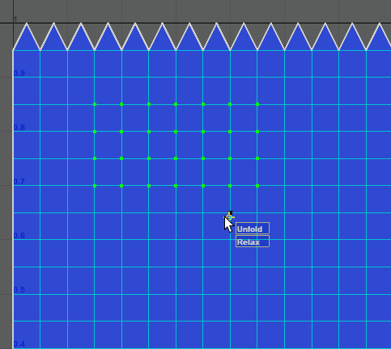

- “UV 编辑器 > 工具”(UV Editor > Tools)菜单 >“平滑”(Smooth) >

使用该选项可以按交互方式展开或松弛 UV。选择一组 UV，然后将“展开”(Unfold) 或“松弛”(Relax) 控件拖动到右侧。

选择(Tools > Smooth) > 时，在“工具设置”(Tool Settings)窗口中将显示以下选项。
平滑设置
- 固定边界(Pin Borders)
-
启用此选项后，移动“展开”(Unfold)或“松弛”(Relax)控件时，选定 UV 集的边界 UV 将不会移动。
- 空间(Space)
-
使用该选项可以调整在“UV 空间”(UV Space)还是“世界”(World)空间中“展开”(Unfold)或“松弛”(Relax) UV。